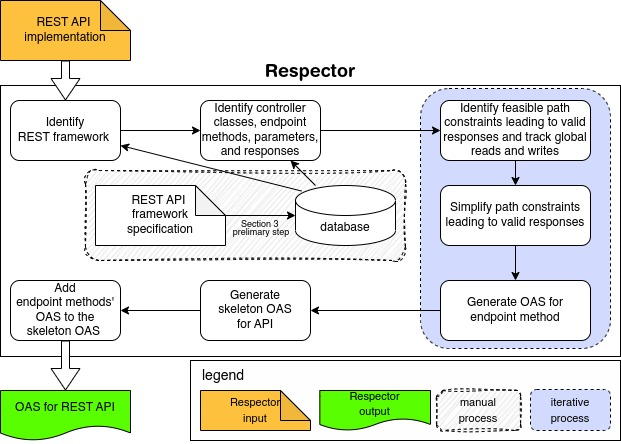
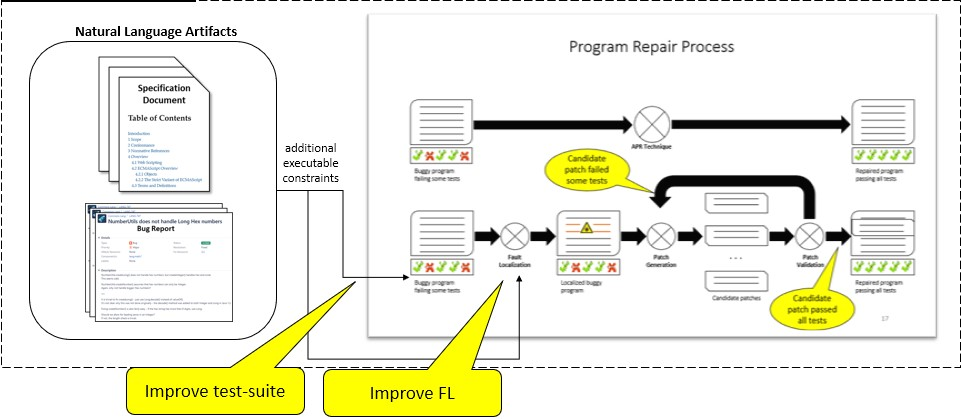
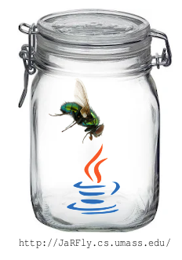
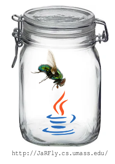
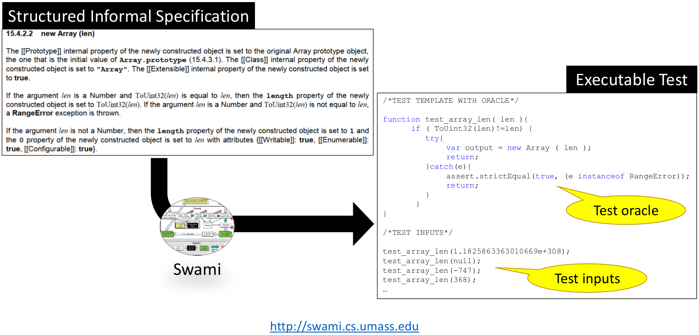
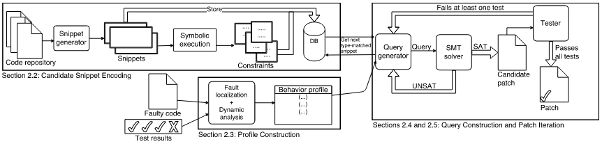
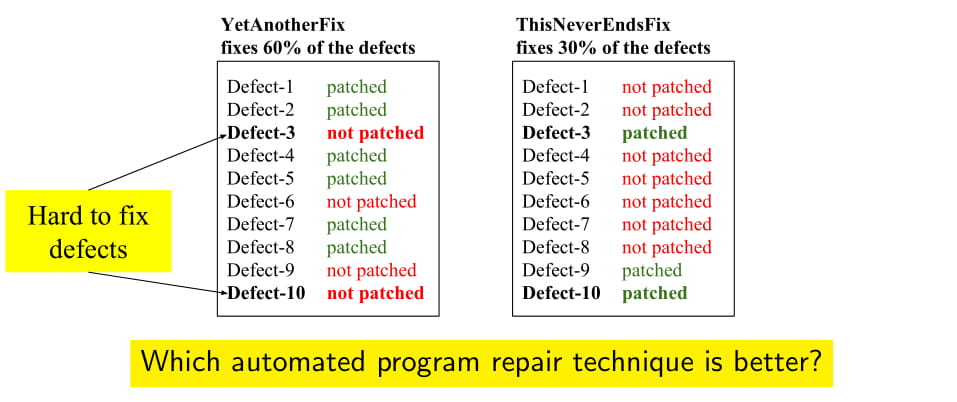
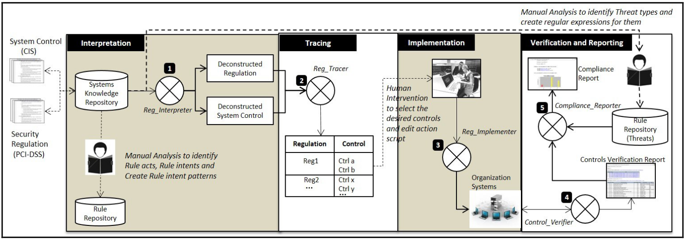

- Automated Testing and Bug Repair for Heterogeneous High-Performance Computing Applications
Scientific advancements typically use high-performance computing (HPC)-based simulators to model real-world phenomenon. These simulations involve processing large amounts of data (e.g., analyzing the change in the interaction between atomic particles while changing their physical environment) that typically require special libraries and computational power to run the simulations efficiently. Most of these HPC applications involve processing numerical values and their correctness depends on the implementation of underlying libraries and platforms (e.g., Kokkos, Raja, OpenMP, Cuda) that are used to create and execute the HPC applications on super computers. The goal of this project is to develop techniques to automatically test the correctness of HPC applications, localize the root cause of bugs detected by automated testing, and repair the bugs using automated program repair approach.
- Automatically Generatng Precise OpenAPI Specifications for REST APIs [Paper]
Modern web applications extensively use API calls to update the UI state to respond user events or server-side changes. For such applications, API-level testing is as important as the unit testing and UI testing. Existing API testing tools require API specifications (e.g., OpenAPI), which often may not be available or, when available, be inconsistent with the API implementation, thus limiting the applicability of automated API testing to web applications. The goal of this project is to use program analysis techniques to automatically generate precise OpenAPI specifications from the application's implementation that can be used by automated API testing tools.

- High-Quality Automatic Program Repair [Dissertation]
[Paper][Video]
Automatic program repair (APR) has recently gained attention because it proposes to fix software defects with no human intervention. To automatically fix defects, most APR tools use the developer-written tests to (a) localize the defect, and (b) generate and validate the automatically produced candidate patches based on the constraints imposed by the tests. While APR tools can produce patches that appear to fix the defect for 11–19% of the defects in real-world software, most of the patches produced are not correct or acceptable to developers because they overfit to the tests used during the repair process. This problem is known as the patch overfitting problem. To address this problem, I propose to equip APR tools with additional constraints derived from natural-language software artifacts such as bug reports and requirements specifications that describe the bug and intended software behavior but are not typically used by the APR tools. I hypothesize that patches produced by APR tools while using such additional constraints would be of higher quality. To test this hypothesis, I propose an automated and objective approach to evaluate the quality of patches, and propose two novel methods to improve the fault localization and developer-written test suites using natural-language software artifacts. Finally, I propose to use my patch evaluation methodology to analyze the effect of the improved fault localization and test suites on the quality of patches produced by APR tools for real-world defects.

- Quality of Automated Program Repair on Real World Defects
[Paper]
[Replication Package]
[JaRFly Framework]
In this project we address a deficit of earlier evaluations of automated repair techniques caused by repairing programs and evaluating generated patches’ correctness using the same set of tests. Since tests are an imperfect metric of program correctness, evaluations of this type do not discriminate between correct patches and patches that “overfit” the available tests and break untested but desired functionality. We develop JaRFLy, a framework to automatically evaluate quality of repair tools, on a publicly available benchmarks using independently constructed evaluation test suites.
 

- Automatically Generating Precise Oracles from Structured Natural Language Specifications
[Paper]
[Replication Package]
Software specifications often use natural language
to describe the desired behavior, but such specifications are
difficult to verify automatically. We present Swami, an automated
technique that extracts test oracles and generates executable tests
from structured natural language specifications. Swami focuses
on exceptional behavior and boundary conditions that often cause
field failures but that developers often fail to manually write tests
for.

- SOSRepair: Expressive Semantic Search for Real-World Program Repair
[Paper]
[Replication Package]
This project aims to develop a technique that fundamentally redesigns the use of semantic search for automated repair of real-world defects in real-world systems. The technique should handle large, real-world programs that employ realistic programming constructs and idioms (e.g., structs, console output, and library calls) as well as defects with no passing test cases executing the buggy region.

- Do Automated Program Repair Techniques Repair Hard and Important Bugs?
[ Paper ]
[ Slides ]
[Blog]
[Replication Package]
Existing evaluations of automated repair techniques focus on the
fraction of the defects for which the technique can produce a patch,
the time needed to produce patches, and how well patches generalize
to the intended specification. These evaluations have not focused
on the characteristics of the defects that repair techniques can repair.
This project aims to find answers for questions such as “can automated
repair techniques repair bugs that are hard for humans to repair?” and
“which techniques are more likely to repair a memory leak defect?”.


- Towards automating the security compliance value chain
[Paper]
Information security is of paramount importance in this digital era.
While businesses strive to adopt industry-accepted system-hardening standards such as
benchmarks recommended by the Center for Internet Security (CIS) to combat threats,
they are confronted with an additional challenge of ever-evolving regulations that
address security concerns. These create additional requirements, which must be
incorporated into software systems. In this project, we present a generic approach towards
automating different activities of the Security Compliance Value Chain in
organizations in the context of the Payment Card Industry Data Security Standard (PCI-DSS) regulations.

- Systems and Methods for an Automated Interpretation of Legal Regulations
[Patent]
Regulations influence
several aspects of IT-enabled businesses. Aimed at safeguarding the wellbeing
of citizens, they are written with great rigor and discipline to minimize
incidents of violations. However, their diction is so highly specialized that
it is almost incomprehensible to business communities and software vendors who
need to ensure regulatory compliance. In this projct, we devise a Regulatory Rule Model
to represent regulations and demonstrate its use
to automate the interpretation of regulations.
-
Detecting System Use Cases and Validations from Documents
[ Paper ]
Identifying system use cases and corresponding validations involves analyzing large requirement documents to understand the descriptions of business processes, rules and policies. This consumes a significant amount of effort and time. This project aims to develop an approach to automate the detection of system use cases and corresponding validations from natural-language requirements documents.
- Knowledge-assisted Product Requirements Configurator
[Paper]
Time to market is a key determinant for the success of any product-based business. This depends to a great extent on how efficiently the existing product knowledge is utilized for customization needs. The knowledge is often not represented in a form that allows an easy reuse. In this project, we developed an ontological representation of product primitives for a knowledge-assisted requirements configurator and deployed it in an organizational unit for a financial product suite.
|
|
|